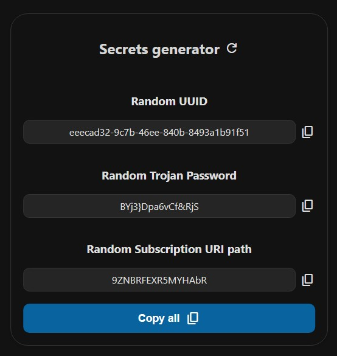
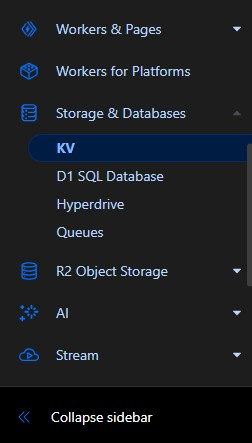
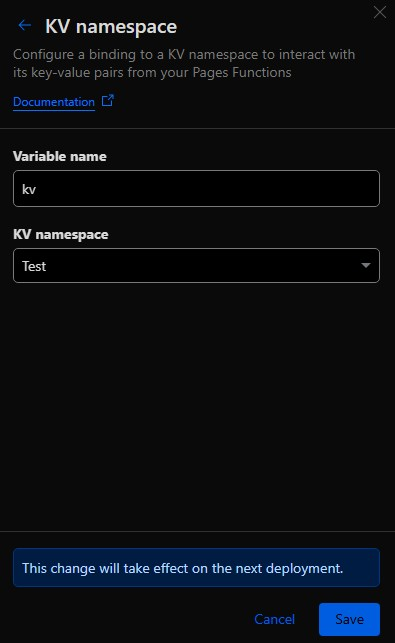
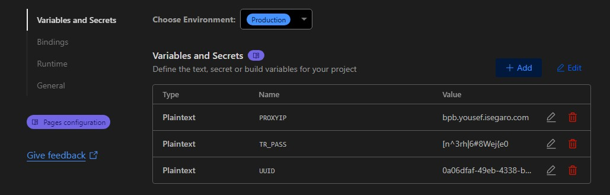
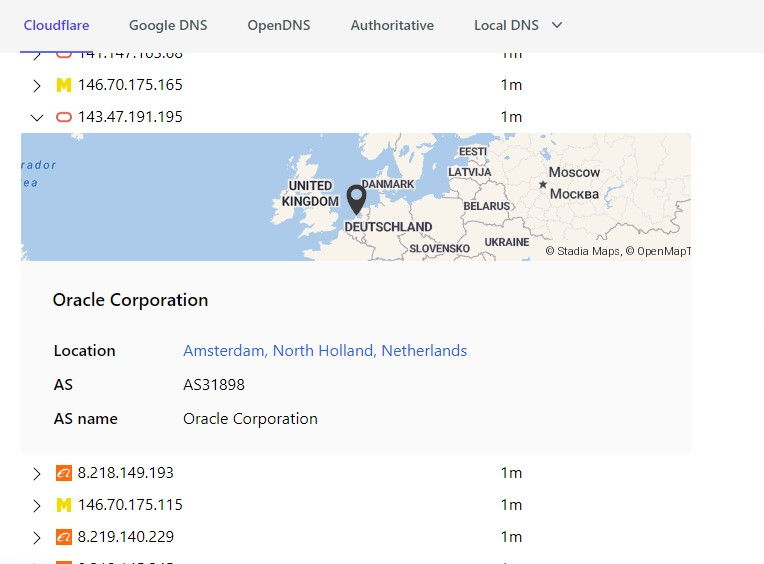

Pages 设置 - 直接上传方法
步骤
1. 创建 Cloudflare 账户
如果您没有 Cloudflare 账户，请在此处创建一个。您只需要一个电子邮件进行注册。由于 Cloudflare 的限制，请使用像 Gmail 这样信誉良好的电子邮件提供商。
2. 创建 Pages 项目
从此处下载 Worker zip 文件。
在您的 Cloudflare 帐户中，导航到 Developer Platform 部分，单击 Create application，选择 Pages 选项卡，然后选择 Use direct upload > Get started。
输入一个 Project Name，它将构成您面板的域名。
Danger
选择一个不包含单词 bpb 的名称，因为这可能会触发 Cloudflare 的检测并导致 1101 错误。
单击 Create Project，然后通过单击 Select from computer 上传下载的 zip 文件，选择 Upload zip。
现在单击 Deploy site，然后单击 Continue to project。
您的项目已创建但尚未正常工作。在 Deployment 页面的 Production 部分，单击 Visit。
Warning
Cloudflare 可能需要最多 5 分钟来设置 Pages 域名。如果 URL 无法立即访问，请不要担心。
您会遇到一个错误，指示必须设置 UUID 和 Trojan 密码。将提供一个链接；请在浏览器中打开它并保存以备下一步使用。

3. 创建 KV
从左侧菜单转到 Storage and Databases > KV：

单击 Create，指定一个所需的名称，然后单击 Add。
返回到 Workers & Pages 部分并打开您的 Pages 项目。转到 Binding 部分，如下所示：

在 Bindings 部分，单击 Add 并选择 KV Namespace。将 Variable name 设置为 kv（完全如图所示），并为 KV namespace 选择先前创建的 KV。单击 Save。

KV 设置现已完成。
4. 设置 UUID、Trojan 密码和订阅路径
从先前提供的 Secrets generator 页面单击 Copy all，在 Cloudflare 仪表板中转到 Settings 部分，找到 Variables and Secrets 部分。单击 Add 并粘贴到 Variable name 字段中，然后单击 Save。这将自动将这 3 个参数添加到面板中。
单击页面顶部的 Create deployment 并再次上传相同的 zip 文件，如前所述。
返回到 Deployments 页面，在 Production 部分单击 Visit，将 panel/ 附加到 URL 的末尾，然后访问面板。
其他配置和提示可在主指南中找到。安装已完成，以下高级设置是可选的。
高级配置（可选）
固定代理 IP
默认情况下，代码会随机使用多个代理 IP，为每次连接到 Cloudflare 地址（覆盖了大部分网络）分配一个新的随机 IP。这种 IP 轮换可能会导致问题，特别是对于交易者。从 2.3.5 版本开始，您可以通过面板更改代理 IP 并更新订阅。但是，建议使用以下方法：
Note
通过面板更改代理 IP 需要在 IP 停止工作时更新订阅，这可能会中断捐赠的配置，因为没有活动订阅的用户无法更新它们。此方法仅供个人使用。其他方法不需要更新订阅。
在项目的 Settings 部分，打开 Variables and Secrets：

单击 Add 并在第一个框中输入 PROXY_IP（大写）。从以下链接获取 IP，该链接按地区和 ISP 列出了 IP：

在 Value 字段中输入 IP，然后单击 Save。单击页面顶部的 Create deployment 并再次上传 zip 文件。更改将生效。
固定 NAT64 前缀
默认情况下，代码会随机使用多个 NAT64 前缀，为每次连接到 Cloudflare 地址（覆盖了大部分网络）分配一个新的随机前缀。这种 IP 轮换可能会导致问题，特别是对于交易者。从 3.4.2 版本开始，您可以通过面板更改前缀并更新订阅。但是，建议使用以下方法：
Note
通过面板更改 NAT64 前缀需要在 IP 停止工作时更新订阅，这可能会中断捐赠的配置，因为没有活动订阅的用户无法更新它们。此方法仅供个人使用。其他方法不需要更新订阅。
在项目的 Settings 部分，打开 Variables and Secrets，单击 Add 并在第一个框中输入 NAT64_PREFIX（大写）。从以下链接获取 IP，该链接按地区和 ISP 列出了 IP：
在 Value 字段中输入 IP，然后单击 Save。单击页面顶部的 Create deployment 并再次上传 zip 文件。更改将生效。
设置回退域
默认情况下，访问主 Pages 域会重定向到 Cloudflare 速度测试站点。要更改此设置，请遵循与代理 IP 相同的步骤，但将变量名称设置为 FALLBACK 并提供一个域名（不带 https:// 或 http://）作为值，例如 www.speedtest.net 或 npmjs.org。
更改订阅路径
默认订阅链接路径使用与 VLESS 相同的 UUID。为了增加隐私性，您可以更改此设置。遵循与上述相同的步骤，但将变量名称设置为 SUB_PATH。秘密页面或秘密生成器提供了一个 Random Subscription URI path 值，您可以使用该值或用自定义值替换（使用允许的字符）。
添加自定义域
在您的 Cloudflare 仪表板中，导航到 Compute (Workers) > Workers & Pages 并选择您的面板。在 Custom domains 选项卡中，单击 Set up a custom domain。输入一个域名（您必须拥有并在同一帐户上激活了它）。例如，如果您拥有 bpb.com，您可以使用该域名本身或像 xyz.bpb.com 这样的子域名。单击 Continue，然后单击 Activate domain。
在您的域名区域中，为 xyz.bpb.com 添加一个指向您的 Pages 域的 CNAME DNS 记录。Cloudflare 将在短时间内将 Pages 连接到您的域。然后，您可以通过 https://xyz.bpb.com/panel 访问您的面板并获取新的订阅。
更新面板
要更新您的面板，请从此处下载新的 zip 文件。在您的 Cloudflare 帐户中，转到 Compute (Workers) > Workers & Pages，选择您的 Pages 项目，单击 Create deployment，然后上传新的 zip 文件。